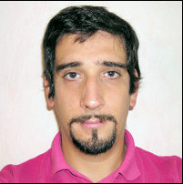

photos tirées de mon site.

Bonjour, je m'appelle Guillaume Crégut, 41 ans maintenant.
j'ai commencé avec un BTS en électronique, avec une préférence pour les micro controleurs et l'élctronique logique. Naturellement, cela m'a amener dans le monde de la programmation, d'abord en assembleur, puis en C, C++.
Par la suite, j'ai choisi à titre personnel de me former dans un language plus visuel pour la conception d'applications, en apprenant le pascal objet avec l'environnement Delphi.
Dans mon parcours professionnel, j'ai été amené à développer quelques applications pour le fonctionnement interne de l'entreprise, en parallèle, je travaillais dans un univers où le réseau, et les matériels informatique étaient mon quotidien.
Plus tard, pour gérer mon activité (Editiel98), j'ai développé les outils qui m'étaient nécessaire, et qui correspondait à mes besoins. Le choix s'est porté sur le php car plus simple de maintenance, libre de licence et mulitplateforme.
Depuis mon retour à l'emploi de salarié, j'ai retrouvé le monde mixte de l'électronique et de l'informatique, mais je suis limité dans mes possibilité de developpement, principalement bases sur des bases de données.
J'ai cependant garder ma passion pour la création de système combiné (électronique et informatique), et je travaille sur plusieurs projets personnels (gestion de ruchers, gestion de cave personnelle, domotique entre autre). Je ne suis pas le plus doué pour créer des systèmes esthétiquement beaux, cherchant beaucoup plus la simplicité, la robustesse et la facilité de l'utilisation.
Vous pouvez me trouver sur les réseaux sociaux tel LinkedIn ou bien viadeo.
En dehors de la technologie, voici quelque un de mes loisirs :
J'ai commencé à écrire des pages web au début des années 2000, et avec mon apprentissage de php, j'ai découvert un environnement de developpement souple, multi plateforme et avec une certaine facilité de maintenance et d'évolution.
Cependant, ma plus grande force, mais aussi ma faiblesse est d'être autodidacte, donc l'envie d'apprendre ne me gène pas, mais me ralenti dans mes projets par manque de connaissance au moment nécessaire.C'est donc la raison qui m'a poussé à vouloir suivre la formation afin d'être plus efficace, acquérir une méthode de travail professionnelle et une autonomie plus importante dans ce travail.
De plus j'apprécie beaucoup le fait de concevoir, et d'utiliser un système depuis l'approche du cahier des charges jusqu'à la livraison de celui-ci.